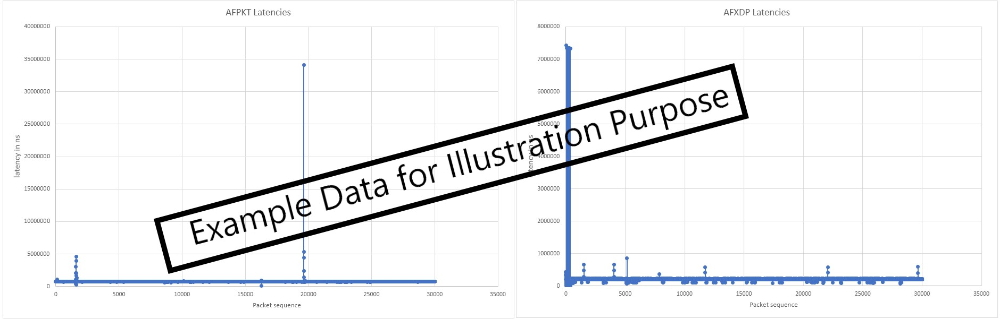

Introduction¶
IEEE Ethernet is a core technology which is a backbone for IT operations and was designed to provide best effort communication suitable for IT operations. Operational Technology vendors have innovatively used Core IEEE Ethernet technology with proprietary solutions for enabling time-bounded communication. To address the need for precision timing, traffic shaping, and time-bounded communication over networks, IEEE introduced a suite of standards known as Time Sensitive Networking (TSN).
Agilex™ 5 E-Series is designed as an end point for Industrial automation application with support for the following TSN protocols:
- Time Synchronization Protocols:
- IEEE 1588-2008 Advanced Timestamp (Precision Time Protocol - PTP):
- Function: Provides sub-microsecond accuracy for time synchronization between computing systems over a local area network.
- Key Features: 2-step synchronization, PTP offload, and timestamping.
- Use Case: Synchronizing industrial devices to operate in unison, ensuring coordinated actions across factory or plant operations.
- IEEE 802.1AS (Timing and Synchronization):
- Function: A profile of PTP (version 2) that ensures precise time synchronization in a hierarchical master-slave architecture.
- Key Features: Prioritizes accuracy and variability of timing, crucial for industrial and automotive systems.
- Use Case: Synchronizing devices to a common time for optimal operation and collaboration.
- IEEE 1588-2008 Advanced Timestamp (Precision Time Protocol - PTP):
- Credit Based Shaper Protocol:
- IEEE 802.1Qav (Time-Sensitive Streams Forwarding and Queuing):
- Function: Provides low-latency, time-synchronized delivery of audio and video streams over Ethernet networks.
- Key Features: Credit-based shaper ensuring end-to-end guaranteed bandwidth with fairness to best-effort traffic.
- Use Case: Ensuring dedicated bandwidth for audio-video bridging (AVB) streams with minimal latency.
- IEEE 802.1Qav (Time-Sensitive Streams Forwarding and Queuing):
- Traffic Scheduling Protocols:
- IEEE 802.1Qbv (Time-Scheduled Traffic Enhancements):
- Function: Enables the transmission of frames at specific scheduled times within microsecond ranges.
- Key Features: Critical for time-sensitive scheduled traffic in industrial applications.
- Use Case: Facilitating precise, time-critical communication for industrial devices like PLCs and drives.
- IEEE 802.1Qbu (Frame Preemption):
- Function: Allows high-priority frames to preempt lower-priority frames, reducing latency and jitter.
- Key Features: Utilizes Express Media Access Control (eMAC) and Preemptable Media Access Control (pMAC).
- Use Case: Ensuring high-priority frames arrive with fixed latency, crucial for applications requiring consistent timing.
- IEEE 802.1Qbv (Time-Scheduled Traffic Enhancements):
These TSN standards collectively enable precise timing, traffic shaping, and time-bounded communication, making them indispensable for applications requiring high reliability and determinism.
The details of TSN is not in the scope of this document. Here are some reference to the TSN specifications
- IEEE Std 802.1AS™-2011 "Timing and Synchronization for Time-Sensitive Applications in Bridged Local Area Networks"
- IEEE Std 802.1Qav™-2009 “Forwarding and Queuing Enhancements for Time-Sensitive Streams”
- IEEE Std 802.1Qbv™-2015 “Enhancements for Scheduled Traffic”
- IEEE Std 802.1Qbu™-2016 “Frame Preemption”
TSN HPS RGMII System Example Design Overview¶
The Time Sensitive Network (TSN) through Hard Processor System (HPS) IO System Example Design (SED) is a reference design running on the Agilex™ 5 E-Series 065B Premium Development Kit.
This System Example Design comprises the following components:
- Hardware Reference Design (GHRD)
- Reference HPS software including:
- Arm Trusted Firmware
- U-Boot
- Linux Kernel
- Linux Drivers
- Sample Applications
TSN Solution Architecture for this SED is illustrated as:

[Note:] This is a pre-production release of Agilex™ 5 TSN HPS RGMII System Example Design, on Agilex™ 5 FPGA E-Series 065B Premium Development Kit with speed grade -6S. This corresponds to Engineering Samples Silicon quality.
Prerequisites¶
<<<<<<< HEAD This system example design is based on the Agilex 5 E-Series Premium Development Kit GSRD. It is recommended that you familiarize yourself with the GSRD development flow before proceeding with this design. ======= This system example design is based on the Agilex 5 E-Series Premium Development Kit GSRD. It is recommended that you familiarize yourself with the GSRD development flow before proceeding with this design.
8558e2f822cdd35abe8118edc87d157478609d8f The TSN through HPS IO System Example Design will be implemented on the HPS Enablement Expansion Board (also referred as HPS Daughter Card), which is included with the development kit.
Development Kit¶
This Example Design targets the Agilex 5 FPGA E-Series 065B Premium Development Kit, utilizing the HPS. <<<<<<< HEAD Refer to GSRD#Development Kit for details about the board, including how to install the HPS Daughter Card. ======= Refer to GSRD#Development Kit for details about the board, including how to install the HPS Daughter Card.
8558e2f822cdd35abe8118edc87d157478609d8f
- Altera® Agilex™ 5 FPGA E-Series 065B Premium Development Kit
- HPS Enablement Expansion Board. Included with the development kit.
- Mini USB Cable
- Micro USB Cable
- Ethernet Cable
- Micro SD card and USB card writer
Altera® Agilex™ 5 FPGA E-Series 065B Premium Development Kit:
{kind=link}
HPS Enablement Expandsion Board Card:

Development Environment¶
Host PC with:
- 64 GB of RAM. Less will be fine for only exercising the binaries, and not rebuilding the GSRD.
- Linux OS installed. Ubuntu 22.04LTS was used to create this page, other versions and distributions may work too.
- Serial terminal (for example GtkTerm or Minicom on Linux and TeraTerm or PuTTY on Windows)
- Altera® Quartus® Prime Pro Edition version. Used to recompile the hardware design. If only writing binaries is required, then the smaller Altera® Quartus® Prime Pro Edition Programmer is sufficient. <<<<<<< HEAD
- The prebuilt binaries were built using Quartus version 25.1.1
-
The instructions for rebuilding the binaries use Quartus version 25.1.1¶
- The prebuilt binaries were built using Quartus version 25.1
- The instructions for rebuilding the binaries use Quartus version 25.1
8558e2f822cdd35abe8118edc87d157478609d8f
- Local Ethernet network, with DHCP server
- Internet connection. For downloading the files, especially when rebuilding the GSRD.
Release Contents¶
This page documents the following:
- Binary Release - see Programming the Binaries section for release content details
- Source Code Release - see Programming Software Image section for release content details
Prebuilt Binaries¶
<<<<<<< HEAD The Agilex 5 Premium Development Kit 25.1.1 Example Design binaries are located at ======= The Agilex 5 Premium Development Kit 25.1 Example Design binaries are located at
8558e2f822cdd35abe8118edc87d157478609d8f https://releases.rocketboards.org/2025.08/
| HPS Daughter Card | Boot Source | Link |
|---|---|---|
| Enablement Board | SD Card | https://releases.rocketboards.org/2025.08/gsrd/agilex5_dk_a5e065bb32aes1_gsrd |
Sources¶
<<<<<<< HEAD Altera® Quartus® Prime Pro Edition Version 25.1.1 and the following software component versions integrate the 25.1.1 release. ======= Quartus Prime Pro v25.1 and the following software component versions were used to build the provided prebuilt binaries:
8558e2f822cdd35abe8118edc87d157478609d8f
Note: Regarding the GHRD components in the following table, only the device-specific GHRD is used in this page.
| Component | Location | Branch | Commit ID/Tag |
|---|---|---|---|
| Agilex 5 GHRD | https://github.com/altera-fpga/agilex5e-ed-gsrd | main | QPDS25.1.1_REL_GSRD_PR |
| Linux | https://github.com/altera-fpga/linux-socfpga | socfpga-6.12.19-lts | QPDS25.1.1_REL_GSRD_PR |
| Arm Trusted Firmware | https://github.com/altera-fpga/arm-trusted-firmware | socfpga_v2.12.1 | QPDS25.1.1_REL_GSRD_PR |
| U-Boot | https://github.com/altera-fpga/u-boot-socfpga | socfpga_v2025.04 | QPDS25.1.1_REL_GSRD_PR |
| Yocto Project | https://git.yoctoproject.org/poky | walnascar | latest |
| Yocto Project: meta-intel-fpga | https://git.yoctoproject.org/meta-intel-fpga | walnascar | latest |
| Yocto Project: meta-intel-fpga-refdes | https://github.com/altera-fpga/meta-intel-fpga-refdes | walnascar | QPDS25.1.1_REL_GSRD_PR |
Note: The combination of the component versions indicated in the table above has been validated through the use cases described in this page and it is strongly recommended to use these versions together. If you decided to use any component with different version than the indicated, there is not warranty that this will work.
======= | GHRD | https://github.com/altera-fpga/agilex5e-ed-gsrd | master | QPDS25.1.1_REL_GSRD_PR | | Linux | https://github.com/altera-fpga/linux-socfpga | socfpga-6.12.19-lts | QPDS25.1.1_REL_GSRD_PR | | Arm Trusted Firmware | https://github.com/altera-fpga/arm-trusted-firmware | socfpga_v2.12.1 | QPDS25.1.1_REL_GSRD_PR | | U-Boot | https://github.com/altera-fpga/u-boot-socfpga | socfpga_v2025.04 | QPDS25.1.1_REL_GSRD_PR | | Yocto Project | https://git.yoctoproject.org/poky | walnascar | latest | | Yocto Project: meta-intel-fpga | https://git.yoctoproject.org/meta-intel-fpga | walnascar | latest | | Yocto Project: meta-intel-fpga-refdes | https://github.com/altera-fpga/meta-intel-fpga-refdes | walnascar | QPDS25.1.1_REL_GSRD_PR |
8558e2f822cdd35abe8118edc87d157478609d8f
Release Notes¶
See https://github.com/altera-opensource/gsrd-socfpga/releases/tag/QPDS25.1.1_REL_GSRD_PR
TSN RGMII Architecture¶
This system example design showcases Ethernet design through the HPS IO on the HPS Enablement Expansion Board, with support for TSN features including IEEE 802.1AS, IEEE 802.1Qav, IEEE 802.1Qbv, IEEE 802.1Qbu.
{kind=link}
-
HPS Peripherals connected to HPS Enablement Expansion Board:
- Micro SD Card
- EMAC
- HPS JTAG debug
- UART
User Flow¶
There are two ways to test the design based on use case.
- User Flow 2: Testing Complete Flow.
| User Flow | Description | Required for Userflow#1 | Required for Userflow#2 |
|---|---|---|---|
| Environment Setup | Tools Download and Installation | Yes | Yes |
| Install dependencies for SW compilation | No | Yes | |
| Compilation | Simulation | No | No |
| Hardware Compilation | No | Yes | |
| Software Compilation | No | Yes | |
| Programming | Programming the binaries | Yes | Yes |
| Linux boot | Yes | Yes | |
| Testing | Run Ping Test | Yes | Yes |
| Testing | Run Test Application | Yes | Yes |
Environment Setup¶
Tools Download and Installation¶
-
Quartus Prime Pro <<<<<<< HEAD - Please download and install the Quartus® Prime Pro Edition version 25.1.1 version software. ======= - Please download and install the Quartus® Prime Pro Edition version 25.1 version software.
8558e2f822cdd35abe8118edc87d157478609d8f
-
Win32 Disk Imager - Please download and install the latest Win32 Disk Imager, available at https://win32diskimager.org/
Download and setup the build toolchain¶
1. Create the top folder to store all the build artifacts:
sudo rm -rf agilex5_gsrd.enablement
mkdir agilex5_gsrd.enablement
cd agilex5_gsrd.enablement
export TOP_FOLDER=`pwd`
2. Download and setup the build toolchain. It will be used only by the GHRD makefile to build the debug HPS FSBL, to build the _hps_debug.sof file:
Note that this is installed in the TOP_FOLDER. You may installed this is in other location, but note the path and export it accordingly
cd $TOP_FOLDER
wget https://developer.arm.com/-/media/Files/downloads/gnu/14.3.rel1/binrel/\
arm-gnu-toolchain-14.3.rel1-x86_64-aarch64-none-linux-gnu.tar.xz
tar xf arm-gnu-toolchain-14.3.rel1-x86_64-aarch64-none-linux-gnu.tar.xz
rm -f arm-gnu-toolchain-14.3.rel1-x86_64-aarch64-none-linux-gnu.tar.xz
export PATH=`pwd`/arm-gnu-toolchain-14.3.rel1-x86_64-aarch64-none-linux-gnu/bin/:$PATH
export ARCH=arm64
export CROSS_COMPILE=aarch64-none-linux-gnu-
3. Set up the Quartus tools in the PATH, so they are accessible without full path Note: The following must be re-done for fresh terminal session
<<<<<<< HEAD
<<<<<<< HEAD
export QUARTUS_ROOTDIR=~/intelFPGA_pro/25.1.1/quartus/
=======
export QUARTUS_ROOTDIR=~/intelFPGA_pro/25.1/quartus/
>>>>>>> 8558e2f822cdd35abe8118edc87d157478609d8f
=======
export QUARTUS_ROOTDIR=~/altera_pro/25.1.1/quartus/
>>>>>>> 3d0b8b70 (update build steps)
export PATH=$QUARTUS_ROOTDIR/bin:$QUARTUS_ROOTDIR/linux64:$QUARTUS_ROOTDIR/../qsys/bin:$PATH
Install dependencies for SW compilation¶
Make sure you have Yocto system requirements met: Yocto Requirements.
The command to install the required packages on Ubuntu 22.04-LTS is:
sudo apt-get update
sudo apt-get upgrade
sudo apt-get install openssh-server mc libgmp3-dev libmpc-dev gawk wget git diffstat unzip texinfo gcc \
build-essential chrpath socat cpio python3 python3-pip python3-pexpect xz-utils debianutils iputils-ping \
python3-git python3-jinja2 libegl1-mesa libsdl1.2-dev pylint xterm python3-subunit mesa-common-dev zstd \
liblz4-tool git fakeroot build-essential ncurses-dev xz-utils libssl-dev bc flex libelf-dev bison xinetd \
tftpd tftp nfs-kernel-server libncurses5 libc6-i386 libstdc++6:i386 libgcc++1:i386 lib32z1 \
device-tree-compiler curl mtd-utils u-boot-tools net-tools swig -y
On Ubuntu 22.04 you will also need to point the /bin/sh to /bin/bash, as the default is a link to /bin/dash:
Compilation Flow¶
Hardware Compilation Flow¶
cd $TOP_FOLDER
rm -rf agilex5_soc_devkit_ghrd && mkdir agilex5_soc_devkit_ghrd && cd agilex5_soc_devkit_ghrd
wget https://github.com/altera-fpga/agilex5e-ed-gsrd/releases/download/QPDS25.1.1_REL_GSRD_PR/a5ed065es-premium-devkit-oobe-legacy-baseline.zip
unzip a5ed065es-premium-devkit-oobe-legacy-baseline.zip
rm -f a5ed065es-premium-devkit-oobe-legacy-baseline.zip
make legacy_baseline-build
make legacy_baseline-sw-build
quartus_pfg -c output_files/legacy_baseline.sof \
output_files/legacy_baseline_hps_debug.sof \
-o hps_path=software/hps_debug/hps_wipe.ihex
cd ..
The following files are created:
$TOP_FOLDER/agilex5_soc_devkit_ghrd/output_files/legacy_baseline.sof$TOP_FOLDER/agilex5_soc_devkit_ghrd/output_files/legacy_baseline_hps_debug.sof
Build Core RBF¶
cd $TOP_FOLDER
rm -f ghrd_a5ed065bb32ae6sr0.rbf
quartus_pfg -c agilex5_soc_devkit_ghrd/output_files/legacy_baseline_hps_debug.sof ghrd_a5ed065bb32ae6sr0.rbf -o hps=1
The following file is created:
$TOP_FOLDER/ghrd_a5ed065bb32ae6sr0.core.rbf
Software Compilation Flow¶
Set Up Yocto¶
1. Clone the Yocto script and prepare the build:
cd $TOP_FOLDER
rm -rf gsrd-socfpga
git clone -b QPDS25.1.1_REL_GSRD_PR https://github.com/altera-fpga/gsrd-socfpga
cd gsrd-socfpga
. agilex5_dk_a5e065bb32aes1-gsrd-build.sh
build_setup
Customize Yocto¶
1. Save the core.rbf as $WORKSPACE/meta-intel-fpga-refdes/recipes-bsp/ghrd/files/agilex5_dk_a5e065bb32aes1_gsrd_ghrd.core.rbf
2. Update the recipe $WORKSPACE/meta-intel-fpga-refdes/recipes-bsp/ghrd/hw-ref-design.bb as follows:
* Replace the entry ${GHRD_REPO}/agilex5_dk_a5e065bb32aes1_gsrd_${ARM64_GHRD_CORE_RBF};name=agilex5_dk_a5e065bb32aes1_gsrd_core with file://agilex5_dk_a5e065bb32aes1_gsrd_ghrd.core.rbf;sha256sum=<CORE_SHA> where CORE_SHA is the sha256 checksum of the file
* Delete the line SRC_URI[agilex5_dk_a5e065bb32aes1_gsrd_core.sha256sum] = "bf11c8cb3b6d9487f93ce0e055b1e5256998a25b25ac4690bef3fcd6225ee1ae"
The above are achieved by the following instructions:
CORE_RBF=$WORKSPACE/meta-intel-fpga-refdes/recipes-bsp/ghrd/files/agilex5_dk_a5e065bb32aes1_gsrd_ghrd.core.rbf
ln -s $TOP_FOLDER/ghrd_a5ed065bb32ae6sr0.core.rbf $CORE_RBF
OLD_URI="\${GHRD_REPO}\/agilex5_dk_a5e065bb32aes1_gsrd_\${ARM64_GHRD_CORE_RBF};name=agilex5_dk_a5e065bb32aes1_gsrd_core"
CORE_SHA=$(sha256sum $CORE_RBF | cut -f1 -d" ")
NEW_URI="file:\/\/agilex5_dk_a5e065bb32aes1_gsrd_ghrd.core.rbf;sha256sum=$CORE_SHA"
sed -i "s/$OLD_URI/$NEW_URI/g" $WORKSPACE/meta-intel-fpga-refdes/recipes-bsp/ghrd/hw-ref-design.bb
sed -i "/agilex5_dk_a5e065bb32aes1_gsrd_core\.sha256sum/d" $WORKSPACE/meta-intel-fpga-refdes/recipes-bsp/ghrd/hw-ref-design.bb
Build Yocto¶
Build Yocto:
Gather files:
The following files are created:
$TOP_FOLDER/gsrd-socfpga/agilex5_dk_a5e065bb32aes1-gsrd-images/u-boot-agilex5-socdk-gsrd-atf/u-boot-spl-dtb.hex$TOP_FOLDER/gsrd-socfpga/agilex5_dk_a5e065bb32aes1-gsrd-images/u-boot.itb$TOP_FOLDER/gsrd-socfpga/agilex5_dk_a5e065bb32aes1-gsrd-images/sdimage.tar.gz
Building HPS Bootable Configuration Files¶
Ensure you have completed the Hardware Compilation Flow and Software Compilation Flow successfully before continuing below.
Build QSPI Image¶
cd $TOP_FOLDER
rm -f ghrd_a5ed065bb32ae6sr0.hps.jic ghrd_a5ed065bb32ae6sr0.core.rbf
quartus_pfg \
-c agilex5_soc_devkit_ghrd/output_files/legacy_baseline.sof ghrd_a5ed065bb32ae6sr0.jic \
-o device=MT25QU128 \
-o flash_loader=A5ED065BB32AE6SR0 \
-o hps_path=gsrd-socfpga/agilex5_dk_a5e065bb32aes1-gsrd-images/u-boot-agilex5-socdk-gsrd-atf/u-boot-spl-dtb.hex \
-o mode=ASX4 \
-o hps=1
The following file is created:
$TOP_FOLDER/ghrd_a5ed065bb32ae6sr0.hps.jic
Build HPS RBF¶
This is an optional step, in which you can build an HPS RBF file, which can be used to configure the HPS through JTAG instead of QSPI though the JIC file.
cd $TOP_FOLDER
rm -f ghrd_a5ed065bb32ae6sr0.hps.rbf
quartus_pfg \
-c agilex5_soc_devkit_ghrd/output_files/legacy_baseline.sof ghrd_a5ed065bb32ae6sr0.rbf \
-o hps_path=gsrd-socfpga/agilex5_dk_a5e065bb32aes1-gsrd-images/u-boot-agilex5-socdk-gsrd-atf/u-boot-spl-dtb.hex \
-o hps=1
The following file is created:
$TOP_FOLDER/ghrd_a5ed065bb32ae6sr0.hps.rbf
Programming the Binaries¶
This section presents how to use the prebuilt binaries included with the System Example Design release.
Note: Please download Prebuilt Binaries from here, if you are leveraging userflow#1.
Configure Board¶
1. Leave all jumpers and switches in their default configuration.
2. Install the appropriate HPS Daughtercard.
3. Connect mini USB cable from vertical connector on HPS Daughtercard to host PC. This is used for the HPS serial console.
4. Connect micro USB cable from development board to host PC. This is used by the tools for JTAG communication.
5. Connect Ethernet cable from HPS Daughter Card to an Ethernet switch connected to local network. Local network must provide a DCHP server.
Configure Serial Console¶
All the scenarios included in this release require a serial connection. This section presents how to configure the serial connection.
1. Install a serial terminal emulator application on your host PC:
- For Windows: TeraTerm or PuTTY are available
- For Linux: GtkTerm or Minicom are available
2. Power down your board if powered up. This is important, as once powered up, with the micro USB JTAG cable connected, a couple more USB serial ports will enumerate, and you may choose the wrong port.
3. Connect mini-USB cable from the vertical mini-USB connector on the HPS Daughter Card to the host PC
4. On the host PC, an USB serial port will enumerate. On Windows machines it will be something like COM4, while on Linux machines it will be something like /dev/tty/USB0.
5. Configure your serial terminal emulator to use the following settings:
- Serial port: as mentioned above
- Baud rate: 115,200
- Data bits: 8
- Stop bits: 1
- CRC: disabled
- Hardware flow control: disabled
6. Connect your terminal emulator
Write QSPI Flash¶
1. Power down board
2. Set MSEL dipswitch SW27 to JTAG: OFF-OFF-OFF-OFF
3. Power up the board
4. Write QSPI Flash:
Using pre-built image
- Download and extract the JIC image, then write it to QSPI
cd $TOP_FOLDER
wget https://releases.rocketboards.org/2025.08/gsrd/agilex5_dk_a5e065bb32aes1_gsrd/ghrd_a5ed065bb32ae6sr0.hps.jic.tar.gz
<<<<<<< HEAD
=======
>>>>>>> 8558e2f822cdd35abe8118edc87d157478609d8f
tar xf ghrd_a5ed065bb32ae6sr0.hps.jic.tar.gz
Using compiled image
- Write JIC image to QSPI:
cd $TOP_FOLDER
jtagconfig --setparam 1 JtagClock 16M
quartus_pgm -c 1 -m jtag -o "pvi;ghrd_a5ed065bb32ae6sr0.hps.jic"
Programming Software Image¶
For Prebuilt:
<<<<<<< HEAD
- Download SD card image from the prebuilt binaries https://releases.rocketboards.org/2025.08/gsrd/agilex5_dk_a5e065bb32aes1_gsrd/sdimage.tar.gz and extract the archive, obtaining the file gsrd-console-image-agilex5_devkit.wic.
=======
- Download SD card image from the prebuilt binaries https://releases.rocketboards.org/2025.08/gsrd/agilex5_dk_a5e065bb32aes1_gsrd/sdimage.tar.gz and extract the archive, obtaining the file gsrd-console-image-agilex5_devkit.wic.
8558e2f822cdd35abe8118edc87d157478609d8f
For compiled image:
- Extract sdcard image from the archive located at
$TOP_FOLDER/gsrd-socfpga/agilex5_dk_a5e065bb32aes1-gsrd-images/sdimage.tar.gz
Write SD Card¶
1. Write the gsrd-console-image-agilex5_devkit.wic. SD card image to the micro SD card using the included USB writer in the host computer:
- On Linux, use the
ddutility as shown next:
# Determine the device associated with the SD card on the host computer.
cat /proc/partitions
# This will return for example /dev/sdx
# Use dd to write the image in the corresponding device
sudo dd if=gsrd-console-image-agilex5_devkit.wic of=/dev/sdx bs=1M
# Flush the changes to the SD card
sync
- On Windows, use the Win32DiskImager program. For this, first rename the extension of gsrd-console-image-agilex5_devkit.wic to an .img file (sdcard.img for example) and write the image as shown in the next figure:

Linux Boot¶
1. Power down board
2. Set MSEL dipswitch SW27 to ASX4 (QSPI): OFF-ON-ON-OFF
3. Power up the board
4. Wait for Linux to boot, use root as user name, and no password will be requested.
Testing¶
For the purpose of demonstration, 2 development kits (refer to GSRD) will be required with Ethernet connected back to back from one board to another.
Note: Ethernet port is on the HPS Enablement Expansion Board attached.
{kind=link}
Ping Test¶
Use ifconfig to configure the IP address on both the Devkit DUT and start testing.
Example:-
Devkit #1 : $ ifconfig eth0 192.168.1.100
Devkit #2 : $ ifconfig eth0 192.168.1.200
Running iperf Test:¶
-
Execute below command on Devkit #1 DUT.
iperf3 -s eth0 -
Execute below command on Devkit #2 DUT.
iperf3 eth0 -c 192.168.1.100 -b 0 -l 1500Note : Update the Devkit #1 DUT IP address in above command.
Run TSN Application¶
The following examples are demonstrated using 2 units of the Agilex 5 platform. Please take note of the notation "[Board A or B]". The following steps assumes both platforms are connected to each other via an Ethernet connection.
1. Boot to Linux
2. Navigate to the tsn directory
Configuration for Both Boards
Step I: Setup Environment Path on Both Boards
3. Board A
4. Board B
TXRX-TSN App
Step II: Run Configuration Script
5. Board A: Run the configuration script and wait for it to configure the IP and MAC address, start clock synchronization, and set up TAPRIO qdisc.
6. Board B: Run the configuration script and wait for it to configure the IP and MAC address, start clock synchronization, and set up ingress qdiscs.
Step III: Start the Application
7. Board B: Run the application.
8. Board A: Immediately after starting the application on Board B, run the application on Board A.
Post-Test Procedure
Once the test is completed, copy the following files from Board B (listener) to the host machine:
- afpkt-rxtstamps.txt
- afxdp-rxtstamps.txt
Generating Latency Plot Using Excel
Import 'afpkt-rxtstamps.txt' and 'afxdp-rxtstamps.txt' to excel in 2 seperate sheets.

Plot Column 1 for each sheets using Scatter chart,

This will generate plot for AFPKT and AFXDP with latency(on Y-axis) against packet count (on X-axis).
The latency for this design example can be seen as below: 
{kind=link}
Run Time Synchronization commands¶
You may use the following command guide to perform time synchronization on the Agilex™ 5 system using PTP4L and PHC2SYS, and to obtain delay values
End-to-End PTP master and slave synchronization
- Board B (as slave):
-i eth0: This option specifies the `eth0` as the network interface to use for PTP. -s This option enables the slave-only mode. -H This option enables hardware time stamping. -E This option selects the end-to-end (E2E) delay measurement mechanism. This is the default.The E2E mechanism is also referred to as the delay “request-response” mechanism. -2 Use Ethernet Layer (L2) -m This option enables printing of messages to the standard output.
- Boards A (as master):
- At Board B (as slave), perform sync on local System Clock with EMAC Hardwware Clock.
Peer-to-Peer PTP synchronization:
- Board B (as slave):
-P: This option enables the use of the Peer Delay Mechanism.
- Board A (as master):
- At Board B (as slave), perform sync on local System Clock with EMAC Hardwware Clock.
gPTP synchronization:
- Board B (as slave):
- Board A (as master):
- At Board B (as slave), perform sync on local System Clock with EMAC Hardwware Clock.
Run TSN RTC-Testbench v4.0 Application¶
The following examples are demonstrated using 2 units of the Agilex 5 platform. Please take note of the notation "[Board A or B]". The following steps assumes both platforms are connected to each other via an Ethernet connection. This sections explain the build and usage of the RTC-Testbench v4.0 for HPS (Hard Processor Sub-system) based Agilex 5 Platform.
Build
The Embedded Linux OS image, also called as GSRD (Golden Software Reference Design) build flow is explained at https://altera-fpga.github.io/rel-25.1/embedded-designs/agilex-5/e-series/premium/gsrd/ug-gsrd-agx5e-premium/#rebuilding-the-gsrd. To include RTC-Testbench v4.0 as part of the OS image build, a bitbake recipe need to be implemented and added in the GSRD build flow. A sample RTC-Testbench v4.0 bitbake recipe is provided in this document. The same can be used in the GSRD build.
1. Clone
git clone -b QPDS25.1_REL_GSRD_PR https://github.com/altera-fpga/gsrd-socfpga
cd gsrd-socfpga
git submodule update --init -r
2. Unzip and Copy rtc-tb4-0 folder under "meta-intel-fpga-refdes/recipes-connectivity"
3. Update tsn-essential package group by adding the “rtc-testbench” to the “packagegroup-tsn-essential” in the file, “meta-intel-fpga-refdes/recipes-images/packagegroups/packagegroup-tsn-essential.bb”. After updating this file content should look as follows:
{kind=link}
4. Proceed with the remaining GSRD build steps
5. Once the build is successful, the generated OS image (.wic file) under ./agilex5_dk_a5e065bb32aes1-gsrd-images folder. It contains the RTC-Test bench under /home/root/rtc-tb_4_0 folder.
Usage
After building the GSRD image (.wic) as explained in the previous section, update the image on any Sundance Mesa platform’s boot SD card and boot the system. After the system boots to Linux, one should be able to see the RTC-Testbench under “/home/root/rtc-tb_4_0” folder. This folder contains the RTC-Testbench binaries (reference & mirror), scripts and examples. The RTC-Testbench can be used as described at https://linutronix.github.io/RTC-Testbench/usage.html. However, the provided scripts and examples are fine-tuned for SM platform. Follow the steps below to use the examples.
1. Connect TSN enabled ethernet interface of on SM platform with the TSN enabled ethernet interface of another SM platform (back-to-back connected Agilex 5 setup). Boot both the Agilex 5 platforms with the GSRD images built with the RTC-Testbench.
2. Since the BPF library is in a custom path, set this custom path for using libbpf library.
3. Make the scripts executable
4. Three examples have been provided – opcua, profinet and multi-middleware.
5. For running the examples, go to the respective example folder on both the systems.
6. Out of two systems, make one as talker (reference) and other system as listener (mirror). Update the config (.yaml) files of both reference and mirror with the actual ethernet interface name, destination MAC and IP addresses. Based on the use case, other parameters of the config file can also be changed, but it is optional.
7. After updating the config files of both talker and listener, first run mirror.sh on the listener system
8. Then run ref.sh on the talker system immediately.
9. Approximately after one minute, both reference (on talker) and mirror (on listener) will be terminated, and the log files will be generated at the location provided in their respective config (.yaml) files.
10. Talker side (reference) log file can be analysed for RTT (Round Trip Time) for different traffic types, and other statistics.
11. The outliers in the log files denotes the number of packets that took two times of the cycle time for a round trip.
12. By tuning the queue scheduling parameters (part of taprio and mqprio scripts) and the parameters in the RTC-Testbench config (.yaml) files, performance of the workload can be improved.
Note 1. This release does not support XDP traffic. Do not enable XDP traffic in the config files.
Notices & Disclaimers¶
Altera® Corporation technologies may require enabled hardware, software or service activation. No product or component can be absolutely secure. Performance varies by use, configuration and other factors. Your costs and results may vary. You may not use or facilitate the use of this document in connection with any infringement or other legal analysis concerning Altera or Intel products described herein. You agree to grant Altera Corporation a non-exclusive, royalty-free license to any patent claim thereafter drafted which includes subject matter disclosed herein. No license (express or implied, by estoppel or otherwise) to any intellectual property rights is granted by this document, with the sole exception that you may publish an unmodified copy. You may create software implementations based on this document and in compliance with the foregoing that are intended to execute on the Altera or Intel product(s) referenced in this document. No rights are granted to create modifications or derivatives of this document. The products described may contain design defects or errors known as errata which may cause the product to deviate from published specifications. Current characterized errata are available on request. Altera disclaims all express and implied warranties, including without limitation, the implied warranties of merchantability, fitness for a particular purpose, and non-infringement, as well as any warranty arising from course of performance, course of dealing, or usage in trade. You are responsible for safety of the overall system, including compliance with applicable safety-related requirements or standards. © Altera Corporation. Altera, the Altera logo, and other Altera marks are trademarks of Altera Corporation. Other names and brands may be claimed as the property of others.
OpenCL* and the OpenCL* logo are trademarks of Apple Inc. used by permission of the Khronos Group™.
Created: December 11, 2024